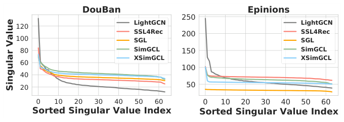
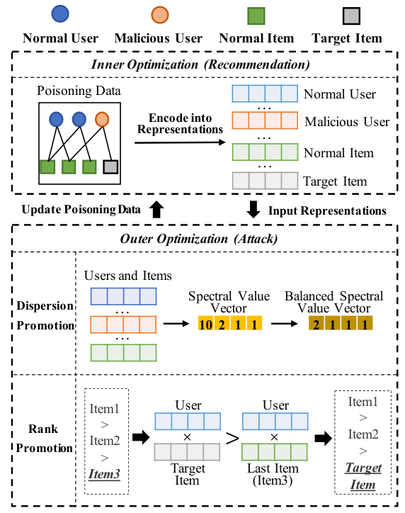

Unveiling Vulnerabilities of Contrastive Recommender Systems to Poisoning Attacks (对比学习推荐系统对投毒攻击的脆弱性揭示)
- 会议/期刊: KDD 2024 (Aug 25–29, Barcelona)
- 作者与机构: Zongwei Wang, Min Gao (重庆大学); Junliang Yu, Hongzhi Yin, Shazia Sadiq (昆士兰大学); Bin Cui (北京大学)
- 推荐链路定位: 训练阶段数据投毒（作用于召回表征学习，评估于 Top-K 推荐列表）
- 研究方向: 去偏公平、可信隐私与工业架构 / 自监督对比学习与交互去噪
- 论文原文: https://arxiv.org/abs/2311.18244v2
- 开源代码: https://github.com/CoderWZW/ARLib
TL;DR (1分钟核心速览)
CL 推荐（SGL/SimGCL/XSimGCL 等）虽能缓解流行度偏置，本文却发现其对定向推广单个物品的投毒攻击比 LightGCN 更脆弱。作者从梯度与谱分析指出：InfoNCE 的负项等价于节点间排斥，使表征全局离散；而最小化 CL 损失等价于压平表征奇异值谱。据此提出 CLeaR：以「谱离散促进 + CW 排序促进」双目标的双层优化生成恶意交互。在 DouBan/Epinions/ML-1M/Yelp 四数据集上，1% 恶意用户即可使 Epinions 上 XSimGCL 的 Hit-Ratio@50 从 0.0161 升至 0.0470（+192%），远超 A_hum、GSPAttack 等 8 个 SOTA 攻击。
Background & Motivation (背景与核心矛盾)
- 主流范式: 以 LightGCN 为编码器，联合优化 BPR 主任务与 InfoNCE 辅助任务 \(\mathcal{L}=\mathcal{L}_{rec}+\omega\mathcal{L}_{cl}\)，通过图/表征增广构造正负视图提升精度与噪声鲁棒性。
- 前人局限: 现有鲁棒性研究只看整体精度（Recall），忽略单品级攻击面；图 1 显示随机攻击下 CL 模型 Recall@50 稳定甚至上升，但 Hit-Ratio@50 随攻击规模单调攀升，且始终高于 LightGCN——即"整体健壮、单品脆弱"的悖论。第二，现有攻击（Random/Bandwagon/AUSH/PoisonRec）均为模型无关的启发式或黑盒 RL，未针对 CL 的损失几何设计。
- 核心洞察 (Key Insight): 表征可视化（图 2）显示无 CL 时用户与流行物品局部聚簇、冷门物品被推远；加 CL 后呈全局离散。原因在 InfoNCE 的负项 \(\log\sum_n \exp(\bar{z}_p^\top\bar{z}_n/\tau)\)天然产生节点互斥力。目标物品通常正是冷门物品，于是 CL 反而成了攻击"助推器"。进一步地，Proposition 1 给出上界\(\mathcal{L}_{cl} < N\max_j \sigma'_j\sigma''_j - \sum_i \sigma'_i\sigma''_i + N\log N\)，最小化 CL 即"压低最大奇异值 + 抬升总和"，使奇异值谱趋于平坦（图 3 实证：CL 曲线明显更平滑）。
- 本文切入点: 攻击者若能主动把谱压得更平，就能加速 CL 的离散化优化，让目标物品天然靠近更多用户；再叠加显式排序目标，即构成对 CL 推荐最坏情形的投毒。

Method (核心方法设计)
1. 整体框架 (Overall Architecture)
CLeaR 建模为双层优化：内层在真实交互 \(\mathcal{D}\)与固定恶意交互\(\mathcal{D}_M\)上训练受害模型得到最优表征\(Z_U^*, Z_I^*\)；外层调整\(\mathcal{D}_M\)（恶意用户-物品连边），在预算约束（1% 用户、每人交互数 ≤ 全局人均）下最大化攻击损失。外层损失由离散促进\(\mathcal{L}_D\)（把表征谱推向平坦）与排序促进\(\mathcal{L}_R\)（把目标物品推入 Top-K）加权组成，二者交替、端到端求梯度后离散化为连边。白盒为主设定，黑盒可用同构代理模型迁移。
flowchart TD
A["真实交互 D + 恶意交互 D_M"] --> B["内层：训练 LightGCN/CL 推荐, 得 Z_U, Z_I"]
B --> C["谱近似 Z_hat = Z - ZV'V'^T/||V'||^2"]
C --> D["L_D: 离散促进 (拉平奇异值)"]
B --> E["L_R: CW 排序促进 (超越 Top-K 末位)"]
D --> F["L_attack = L_D + α·L_R"]
E --> F
F --> G["梯度更新 D_M, 离散化注入"]2. 关键设计拆解 (Key Designs)
- 离散促进目标（Dispersion Promotion）：直觉上应直接把奇异值对齐到平坦分布 \(\mathcal{L}_D=sim(\boldsymbol{\sigma}, cx^{-\beta})\)，但 SVD 耗时且反传不稳定。作者改用 rank-1 谱近似：\(\hat{Z}=Z-\frac{ZV'V'^\top}{\|V'\|_2^2},\ V'=Z^\top ZV\)（\(V\)每轮随机初始化）。该算子对大奇异值乘小系数、对小奇异值乘大系数，直接把谱"压平"，无需 SVD。最终\(\mathcal{L}_D=-\|ZV'V'^\top\|/\|V'\|_2^2\)，即原表征与近似表征的\(L_1\) 距离。物理直觉：让用户表征更均匀铺满空间，冷门目标物品获得更大"接触面"。
- 排序促进目标（Rank Promotion）：离散只提供"起跑线公平"，不保证超越对手。采用可微 CW 损失，令目标物品分数超过该用户推荐列表中最末位物品：\(\mathcal{L}_R=\sum_{u}\sum_{t\in\mathcal{I}_T}g(z_u^\top z_t-\min_{i\in\mathcal{I}^u_{rec}\setminus\mathcal{I}_T}z_u^\top z_i)\)，其中\(g(x)=x\)if\(x\ge0\)else\(e^x-1\)（负区指数平滑，避免梯度消失）。
- 训练目标与开销：\(\mathcal{L}_{attack}=\mathcal{L}_D+\alpha\mathcal{L}_R\)，恶意连边按梯度符号取 Top-|预算| 离散化。无需负采样改造，直接在受害模型的反传图上求解；DouBan 单次攻击耗时 345–885 s，显著低于 DLAttack（4537–7654 s）与 AUSH（约 1350 s），但仍比免训练的 RandomAttack（7.7 s）高 2 个数量级。

Experimental Setup & Evaluation Protocol (实验设置与评估协议)
- 数据集与预处理: 四个公开数据集，统计细节置于原文附录 A.4.1；本文正文以攻击者视角仅使用训练集作为已知信息。
| 数据集 | 规模 | 领域/类型 | 恶意用户预算 | 交互上限 |
|---|---|---|---|---|
| DouBan | 中小型 | 书影音社交评论 | 1% 真实用户 | ≤ 人均交互数 |
| Epinions | 中小型 | 信任社交电商 | 1% | ≤ 人均交互数 |
| ML-1M | 百万级 | 电影评分 | 1% | ≤ 人均交互数 |
| Yelp | 大型 | 本地商户点评 | 1% | ≤ 人均交互数 |
- 数据划分与防穿越 (Splitting Strategy): 比例划分 7:1:2（train/valid/test），投毒数据仅注入训练过程，测试集保持纯净，避免评估穿越。
- 排名评测协议 (Ranking Protocol): 属攻击有效性评测而非传统排序精度评测——对每个用户生成 Top-50 推荐列表，统计 Hit-Ratio@50（目标物品出现频次）与 NDCG@50（出现位置），每实验重复 10 次取均值。未报告显著性检验。
- 对比基线与超参设置: 受害模型为 LightGCN 及 SSL4Rec/SGL/SimGCL/XSimGCL 四种 CL 变体（另在 GMF/NGCF 上验证通用性）；攻击基线 8 个：RandomAttack、BandwagonAttack、AUSH、DLAttack、PoisonRec、FedRecAttack、A_hum、GSPAttack（后两者由联邦模型投毒改造为集中式数据投毒）。权重 \(\alpha\in\{0,0.01,0.1,0.5,1,5,10\}\)，最优多在\(\alpha=0.5\) 附近。
Key Experimental Results (实验关键数据)
1. 主实验对比 (Main Results)
Hit-Ratio@50（Yelp 数值需 ×10⁻³），括号内为相对最强基线的提升：
| 数据集 | 受害模型 | Random | AUSH | DLAttack | PoisonRec | A_hum | GSPAttack | CLeaR | Improv. |
|---|---|---|---|---|---|---|---|---|---|
| DouBan | SGL | 0.0038 | 0.0018 | 0.0017 | 0.0044 | 0.0069 | 0.0047 | 0.0101 | +46.4% |
| DouBan | SimGCL | 0.0058 | 0.0067 | 0.0055 | 0.0109 | 0.0089 | 0.0108 | 0.0159 | +45.9% |
| Epinions | SSL4Rec | 0.0082 | 0.0095 | 0.0325 | 0.0278 | 0.0512 | 0.0465 | 0.0556 | +8.6% |
| Epinions | SGL | 0.0151 | 0.0075 | 0.0186 | 0.0164 | 0.0289 | 0.0222 | 0.0415 | +43.6% |
| Epinions | XSimGCL | 0.0161 | 0.0089 | 0.0159 | 0.0244 | 0.0368 | 0.0458 | 0.0470 | +2.6% |
| ML-1M | SimGCL | 0.0040 | 0.0039 | 0.0048 | 0.0048 | 0.0033 | 0.0055 | 0.0084 | +52.7% |
| Yelp | SSL4Rec | 0.1563 | 0.2061 | 0.1118 | 0.1886 | 0.1938 | 0.1311 | 0.2563 | +24.3% |
| Yelp | SGL | 0.0937 | 0.1561 | 0.0954 | 0.1005 | 0.1000 | 0.1135 | 0.2001 | +28.2% |
NDCG@50 上 CLeaR 同样最优，如 Epinions-XSimGCL 由 GSPAttack 的 0.1262 提至 0.1490，Epinions-SGL 由 0.0753 提至 0.1223。
2. 消融实验 (Ablation Study)
Hit-Ratio@50，\(CLeaR_D\)仅离散促进、\(CLeaR_R\) 仅排序促进：
| 数据集 | 受害模型 | NoneAttack | \(CLeaR_D\) | \(CLeaR_R\) | \(CLeaR_{D+R}\) |
|---|---|---|---|---|---|
| DouBan | SSL4Rec | 0.0000 | 0.0057 | 0.0136 | 0.0181 |
| DouBan | SimGCL | 0.0002 | 0.0051 | 0.0076 | 0.0099 |
| Epinions | SGL | 0.0001 | 0.0168 | 0.0219 | 0.0415 |
| Epinions | XSimGCL | 0.0000 | 0.0245 | 0.0301 | 0.0470 |
3. 关键实验发现 (Key Findings)
- CL 是"放大器"而非"防护盾"：同一攻击强度下，四种 CL 模型的 Hit-Ratio 普遍高于 LightGCN（如 Epinions 上 XSimGCL 0.0470 vs LightGCN 0.0095，约 5 倍），而 \(CLeaR_D\) 单目标已能把 SSL4Rec/DouBan 从 0 拉到 0.0057，直接证明"谱离散"是可被外部操纵的独立攻击面。
- 双目标协同而非简单叠加：Epinions-XSimGCL 上 \(CLeaR_D\)0.0245、\(CLeaR_R\) 0.0301，组合后 0.0470，高于两者之和的一半以上——离散"铺开用户"与排序"顶掉末位"存在乘性互补；且随攻击规模 1%→5% 曲线仍未饱和，说明上界未探明。
- 跨模型结构可迁移且代价可控：在 GMF/NGCF 上仍最优（Epinions-NGCF：A_hum 0.0073 → CLeaR 0.0100）；黑盒下以 NGCF 作代理攻击 SGL 得 0.0084，优于 PoisonRec 的 0.0044，接近白盒 0.0101；单次攻击耗时仅为 DLAttack 的 1/5–1/20，具备工程可行性。
Highlights & Limitations (亮点、对比与审稿批判)
- 与代表作对比 (vs. Prior Work): 与 SGL/SimGCL/XSimGCL 等 防御方工作相反，本文把 InfoNCE 的均匀性从"去偏优点"重述为"攻击面"；与 A_hum/FedRecAttack 等双层优化攻击相比，其差异在于优化目标不再是单一排序损失，而是显式操纵表征奇异值谱，因此对 CL 模型增益最大；与 GSPAttack 这类利用图传播的攻击相比，本文不依赖传播层结构，故在非图编码器（GMF）上同样有效。
- 可迁移亮点: (1) 用 rank-1 近似 \(Z-\frac{ZV'V'^\top}{\|V'\|_2^2}\) 替代 SVD 做"可微谱塑形"，可直接迁移到谱正则化、去流行度偏置、乃至谱域防御（如反向锐化谱）。(2) 把"攻击预算 + 人均交互上限"作为硬约束投影到离散连边，是可复用的投毒实现范式。
- 审稿级局限批判: 其一，主设定为白盒，黑盒仅以同构代理在单数据集验证，"独立训练导致参数漂移"使黑盒性能显著下降，现实威胁被高估；其二，防御侧完全缺席——未提出或评估任何缓解手段（如谱锐化正则、恶意用户检测），且 Yelp-SimGCL 出现 Hit-Ratio 上升而 NDCG 反降（0.0122→0.0119）的矛盾，说明"排名质量"与"曝光频次"两指标的权衡未被讨论。此外正文未报告显著性检验与方差，10 次均值的置信区间缺失。
Rating (四维评分)
- 方法创新性 (Novelty): ⭐⭐⭐⭐⭐ （首次以 SVD 谱上界严格解释 InfoNCE 的离散效应，并将"压平谱"落成可微攻击算子，视角新颖且有理论支撑）
- 评估协议与实验扎实度 (Protocol & Experiments): ⭐⭐⭐⭐ （四数据集 × 五受害模型 × 八攻击基线 + 消融/黑盒/编码器/复杂度齐备，但缺显著性检验，且仅用攻击指标未报告对正常推荐精度的副作用）
- 写作与数学规范度 (Clarity & Rigor): ⭐⭐⭐⭐ （Proposition 1 与谱近似推导链条清晰，符号统一；但部分定义（如 \(sim(\cdot)\)的选择理由、\(V\) 随机初始化的收敛性）论证略简）
- 工业落地与复现价值 (Industrial & Practical Value): ⭐⭐⭐⭐ （代码开源 ARLib，攻击耗时远低于同类学习型攻击，可直接作为 CL 推荐上线前的红队测试基准；白盒依赖仍限制真实黑产场景）